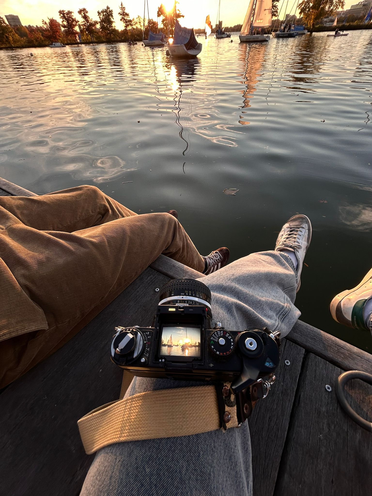

Photography
I have always searched for a way to re-kindle my creativity in a more artistic way. When I was younger I used to play the cello and was far more involved in the arts, at least musically. As time passed, my focus shifted towards sports sciences, and academia. While art is present everywhere, I find that it is in its purest form when practiced in mediums that are flexible, mediums in which the walls of what is considered "right" and "wrong" are less established (think Physics vs. Gastronomy). I also see how statement is flawed and can be used to argue that the more "rigid" mediums can be approached from a more creative perspective... All this to say, I began exploring new disciplines, I ventured back into music, I let my passion for gastronomy grow, and was introduced to photography by a dear friend. Over the summer, I found my father's old film camera (Nikon F3) abandoned in a closet. After some fiddling, I was able to change the batteries and make it work. I hope to share with you all some images and adventures captured through the lense of this soon-to-be well-lived camera.
Some of My Favorite Activities
- Building websites
- Photography
- Exploring new coding frameworks
- Reading books on design and technology